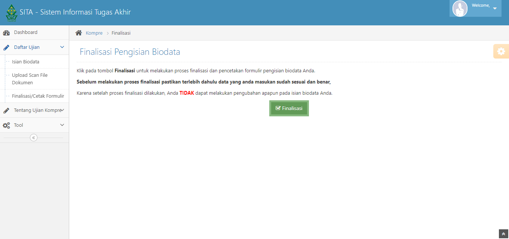

Selamat Datang di Tutorial Daftar Ujian Komprehensif

Silakan bagi teman-teman PAI 18 yang belum mendaftar kompre ikuti tutorial di website ini.
Sebelum mendaftar Ujian Komprehensif sebaiknya teman-teman menyiapkan beberapa
persyaratan yang wajib dipenuhi sebagai berikut
Syarat
Berikut adalah 3 dokumen persyaratan yang wajib diupload
- Transkirp Nilai, Pastikan teman-teman mendapatkan transkrip nilai dari fakultas dan memenuhi 100 sks
Untuk mendapatkan transkrip nilai dari fakultas teman-teman bisa menghubungi Pak Najmudin - Surat Keterangan Ko-Kulikuler yang ditandatangani oleh Bu Dwi Yunitasari dan Wakil Dekan 3 yang dibubuhi Stempel Fakultas, Untuk mendapatkan surat keterangan ko-kulikuler yang sudah ditandatangani dan distempel teman-teman harus membuat beberapa dokumen diantaranya
- Transkirp Ko-Kulikuler, yang berisikan Sertifikat-Sertifikat yang didapat selama berkulaih di UIN Walisongo
Dalam mengisi dan menghitung Transkirp Ko-Kulikuler harap diperhatikan poin dari seritifikat yang didapat
Teman-teman bisa melihat Buku Panduan UIN Walisongo 2018 untuk menentukan poin tersebut atau langsung saja sesuaikan dengan files yang ada di website ini
Silakan teman-teman klik pada navbar Files di atas untuk mendownload files yang dibutuhkan. - Surat Keterangan Ko-Kulikuler, Di dalam surat keterangan ko-kulikuler terdapat tabel transkrip ko-kulikuler, harap teman-teman memasukkan sesuai dengan jumlah presentase poin sertifikat yang ada di Transkirp Ko-Kulikuler
Silakan teman-teman download File Surat Keterangan Ko-Kulikuler pada navbar Files di atas. - Setelah menglengkapi Transkirp Ko-Kulikuler dan Surat Keterangan Ko-Kulikuler, silakan teman-teman menempelkan Tanda Tangan Bu Dwi Yunitasari pada Surat Keterangan Ko-Kulikuler di bagian tanda tangan Bu Dwi Yunitasari
Teman-teman bisa mengunduh Tanda Tangan Bu Dwi Yunitasari di navbar atas bagian Files - Surat Keterangan Ko-Kulikuler kemudian diberi Nomor Surat, teman-teman bisa meminta ke Admin Resepsionis di Dekanat FITK Mas Firman
- Kemduian untuk Tanda Tangan Wakil Dekan 3 dan Stempel Fakultas, teman-teman bisa meminta langsung dengan Prof. Muslih selaku WD3 di ruangan beliau.
- Jika WD3 tidak ada di ruangannya pada hari teman-teman meminta TTD, teman-teman bisa menitipkan Surat Keterangan Ko-Kulikuler ke pada Admin Mas Firman di resepsionis dekanat FITK, harap menunggu Surat Keterangan Ko-Kulikuler teman-teman dibubuhi TTD WD3 dan Stempel
Teman-teman bisa menghubungi Admin Mas Firman untuk menanyakan progres tanda tangan dan stempel fakultas WD3 - Setelah mendapatkan TTD WD3 dan Stempek Fakultas, teman-teman bisa Scan Surat Keterangan Ko-Kulikuler simpan File Scan Surat Keterangan Ko-Kulikuler untuk kemudian diupload
Berikut adalah contoh jika teman-teman sudah mendapatkan Surat Keterangan Ko-Kulikuler yang ditandatangani oleh Bu Dwi Yunitasari dan Wakil Dekan 3 yang dibubuhi Stempel Fakultas - Note, Jika teman-teman tidak sedang berada di Semarang, bisa menitipkan kepada teman yang bisa datang ke kampus
Atau coba menghubungi Admin Mas Firman apakah bisa menitipkan File Surat Keterangan Ko-Kulikuler via WhastApp. - Sertifikat PPL/KKL, Upload sertifikat PPL/KKL
Jika seritifikat PPL/KKL keduanya hilang atau lupa menyimpannya
teman-teman bisa memakai transkrip nilai dari fakultas kemudian kalian highlight bagian nilai PPL teman-teman lalu upload dalam bentuk .jpg, .jpeg atau .png seperti format file upload lainnya.
berikut contoh highlight nilai PPL


Tutorial
- Buka website Sistem Informasi Tugas Akhir (SITA) UIN WAlisongo. Klik di sini
- Kemudian pilih Daftar Komprehensif
- Setelah itu akan diarahkan ke halaman login akun SITA
Silakan teman-teman login dengan menggunakan akun walisiadik masing-masing
Jika mengalami kendala login Akun Sita bisa menghubungi Pak Aang(Sekjur) - Setelah berhasil masuk, teman-teman akan berada di halaman Dashboard selanjunya silakan teman-teman klik Daftar Ujian kemudian pilih Isian Biodata
- Lengkapi semua isi biodata diri yang ada
Jika belum memiliki judul skripsi segera meminta rekomendasi judul dengan Bu Fihris(Kajur) atau dikosongkan dulu juga tidak apa-apa - Selanjunya pilih Upload Scan File Dokumen Upload 3 dokumen persyaratan yang telah disiapkan
Perhatian : Setiap Mahasiswa harus mengupload semua dokumen yang ada di dropdown list dengan ukuran file < 2 MB dan dalam bentuk .jpg, .jpeg atau .png. - Setelah mengupload semua dokumen persyaratan yang ada langkah selanjutnya teman-teman pilih Finalisasi/Cetak Formulir lalu klik Finalisasi, Pastikan lagi bahwa Isian Biodata dan Upload Scan File Dokumen sudah benar 
- Jika berhasil Finalisasi maka akan muncul notifikasi "Pengisian biodata Anda sudah difinalisasi. Silakan cetak formulir pengisian biodata Anda."
Silakan teman-teman download Formulir Pendaftaran Ujian Komprehensif dengan klik tombol Cetak Formulir
Kemduian cetak formulir jika diperlukan - Selamat teman-teman telah terdaftar dalam Ujian Komprehensif
Selanjutnya menunggu Informasi jadwal ujian komprehensif yang diumumkan di Grup WhastApp Forum Komunikasi PAI
Jika ada yang belum bergabung ke dalam grup tersebut bisa menghubungi Bu Dwi Yunitasari dengan mengonfirmasi jika sudah finalisasi Pendaftaran Ujian Komprehensif